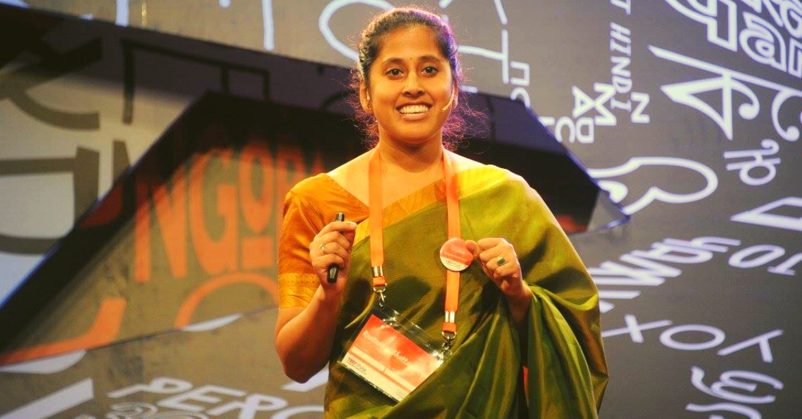

Description
Rwitwika is the CEO of Swaniti Initiative, a social enterprise that delivers public services to the base of the pyramid. As CEO her role focuses on developing long-term growth strategies and formulating key partnerships with central and state government bodies.
She has been one of the pioneers in tying up Data Science to public governance and facilitating key governmental development programs. Having realized Data Science as her forte, she started a non-profit called the Swaniti Initiative that offers parliamentarians in varied constituencies data and insights on taking developmental programs to the masses.